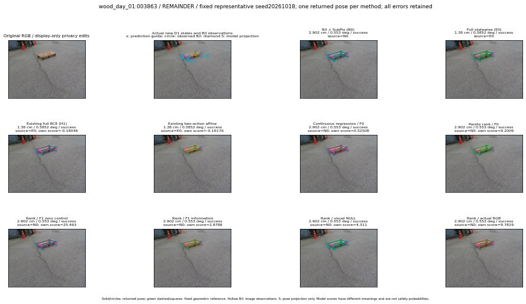

실선은 반환 자세, 초록 점선은 고정 기하 참조입니다. S는 영상 관측이 아닙니다. 점수는 모델별 의미가 다르며 보정된 안전 확률이 아닙니다. 개인정보 처리는 표시 사본에만 적용했습니다.
| 방법·seed | 위치 / 회전 / 공동성공 | 실제 출처 | 선택 후보 | 각 모델 자체 점수 |
|---|---|---|---|---|
| N0 | 2.902 cm / 0.553 deg / success | N0 | N/A | N/A |
| E0 | 1.38 cm / 0.5852 deg / success | E0 | N/A | N/A |
| E0_REGENERATED | 1.38 cm / 0.5852 deg / success | E0 | E0_REGENERATED | N/A |
| POSEFIX_SUBPIX_PF_ANCHOR | 2.839 cm / 1.12 deg / success | OTHER | N/A | N/A |
| POSEFIX_SUBPIX_YOLO_ANCHOR | 2.839 cm / 1.12 deg / success | OTHER | N/A | N/A |
| D1_H1_MLP_s20261018 | 1.38 cm / 0.5852 deg / success | E0 | E0_REGENERATED | -0.1804618537425995 |
| D1_H1_MLP_s20261019 | 1.38 cm / 0.5852 deg / success | E0 | E0_REGENERATED | -0.16184629499912262 |
| D1_H1_MLP_s20261020 | 2.902 cm / 0.553 deg / success | N0 | N0 | -0.9655901193618774 |
| D1_H1_PAIR_MLP_s20261018 | 2.902 cm / 0.553 deg / success | N0 | N0 | -0.7632126212120056 |
| D1_H1_PAIR_MLP_s20261019 | 2.902 cm / 0.553 deg / success | N0 | N0 | -0.5698657035827637 |
| D1_H1_PAIR_MLP_s20261020 | 2.902 cm / 0.553 deg / success | N0 | N0 | 0.025585994124412537 |
| D1_H1_PAIR_ROLE_AFFINE_s20261018 | 1.38 cm / 0.5852 deg / success | E0 | E0_REGENERATED | -0.16176389157772064 |
| D1_H1_PAIR_ROLE_AFFINE_s20261019 | 2.902 cm / 0.553 deg / success | N0 | N0 | -0.305549681186676 |
| D1_H1_PAIR_ROLE_AFFINE_s20261020 | 2.902 cm / 0.553 deg / success | N0 | N0 | -0.19657185673713684 |
| R_CONT_F0_s20261018 | 2.902 cm / 0.553 deg / success | N0 | N0 | 0.5250831842422485 |
| R_CONT_F0_s20261019 | 2.902 cm / 0.553 deg / success | N0 | N0 | 0.5886312127113342 |
| R_CONT_F0_s20261020 | 2.902 cm / 0.553 deg / success | N0 | N0 | 0.6020632386207581 |
| R_ORDER_F0_s20261018 | 2.902 cm / 0.553 deg / success | N0 | N0 | 9.200910568237305 |
| R_ORDER_F0_s20261019 | 2.902 cm / 0.553 deg / success | N0 | N0 | 9.308148384094238 |
| R_ORDER_F0_s20261020 | 2.902 cm / 0.553 deg / success | N0 | N0 | -7.039093494415283 |
| R_ORDER_F1_ZERO_s20261018 | 2.902 cm / 0.553 deg / success | N0 | N0 | 25.463003158569336 |
| R_ORDER_F1_ZERO_s20261019 | 1.38 cm / 0.5852 deg / success | E0 | E0_REGENERATED | 18.930376052856445 |
| R_ORDER_F1_ZERO_s20261020 | 2.902 cm / 0.553 deg / success | N0 | N0 | 12.911489486694336 |
| R_ORDER_F1_s20261018 | 2.902 cm / 0.553 deg / success | N0 | N0 | 2.8788444995880127 |
| R_ORDER_F1_s20261019 | 2.902 cm / 0.553 deg / success | N0 | N0 | 9.054145812988281 |
| R_ORDER_F1_s20261020 | 2.902 cm / 0.553 deg / success | N0 | N0 | 2.186659097671509 |
| V_ORDER_NULL_s20261018 | 2.902 cm / 0.553 deg / success | N0 | N0 | 4.310953617095947 |
| V_ORDER_NULL_s20261019 | 2.902 cm / 0.553 deg / success | N0 | N0 | 4.232836723327637 |
| V_ORDER_NULL_s20261020 | 2.902 cm / 0.553 deg / success | N0 | N0 | 4.781275749206543 |
| V_ORDER_RGB_s20261018 | 2.902 cm / 0.553 deg / success | N0 | N0 | 9.781891822814941 |
| V_ORDER_RGB_s20261019 | 2.902 cm / 0.553 deg / success | N0 | N0 | 5.313915252685547 |
| V_ORDER_RGB_s20261020 | 2.902 cm / 0.553 deg / success | N0 | N0 | -2.444239854812622 |